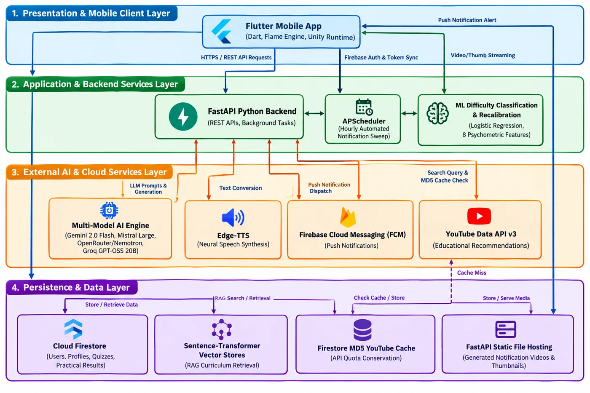

Virtual laboratories
Research indicates that simulations and virtual practical environments can improve access to experimentation and help learners visualise abstract scientific relationships when physical facilities are unavailable.
Research domain
The domain combines virtual laboratory education, adaptive learning, intelligent retrieval, game-based learning, and learning analytics for secondary students.
01 · Literature survey
The project’s review brings together four streams that are often studied separately.
Research indicates that simulations and virtual practical environments can improve access to experimentation and help learners visualise abstract scientific relationships when physical facilities are unavailable.
Points, interactive challenges, and game-based activities can improve engagement when they remain tied to clear lesson-level educational objectives.
Chatbots and retrieval-augmented systems can offer explanations and guidance, while curriculum grounding helps keep support relevant to the learner’s lesson and grade.
Quiz and activity data can reveal misconceptions and support targeted feedback, but practical performance is frequently captured separately from theoretical assessment.
02 · Research gap
Existing systems often provide simulations, quizzes, AI assistance, games, or progress dashboards as separate experiences. Few connect them into a curriculum-aligned, low-resource mobile workflow for Sri Lankan school learners.
How can a mobile learning ecosystem provide meaningful practical physics experience and personalised support when laboratory access, equipment, and continuous guidance are limited?
Secondary students in under-resourced contexts may have limited access to laboratories, apparatus, and guided experimentation. This restricts opportunities to connect formulas and diagrams with observed physical behaviour. At the same time, conventional digital platforms commonly deliver static content or isolated features that cannot evaluate procedural competence, identify individual weaknesses, or close the loop with targeted support.
The project therefore investigates an integrated mobile solution that supports concept discovery, virtual experimentation, assessment, personalised explanation, and progress monitoring in a shared learning workflow.
03 · Objectives
The project’s overall aim is delivered through four coordinated research components.
Design and implement a mobile virtual physics laboratory that enables secondary students—especially learners with limited laboratory access—to study through interactive experimentation, gamified activities, AI-assisted explanations, and lesson-based progress support.
Analyse quiz and practical performance, calibrate question difficulty, detect weak areas, and generate targeted retry and resource recommendations.
Retrieve curriculum-relevant knowledge, provide grade-aware explanations, and connect lesson concepts with real-world scenarios.
Improve content discovery and reinforce syllabus concepts through contextual search and interactive 2D physics games.
Assess equipment selection and experiment steps while using activity-informed video notifications to support continued participation.
04 · Methodology
The work moves from problem identification to artefact design, integrated implementation, verification, and evaluation against technical and user-centred criteria.
Define access barriers, fragmented learning workflows, and stakeholder needs.
Develop the mobile client, backend services, intelligent modules, and shared data contracts.
Connect lessons, assessment data, AI services, practical results, and feedback loops.
Verify functionality, response quality, usability, calculation accuracy, and system behaviour.
05 · Technologies used
The common thesis draft identifies the following technologies across the integrated architecture.
